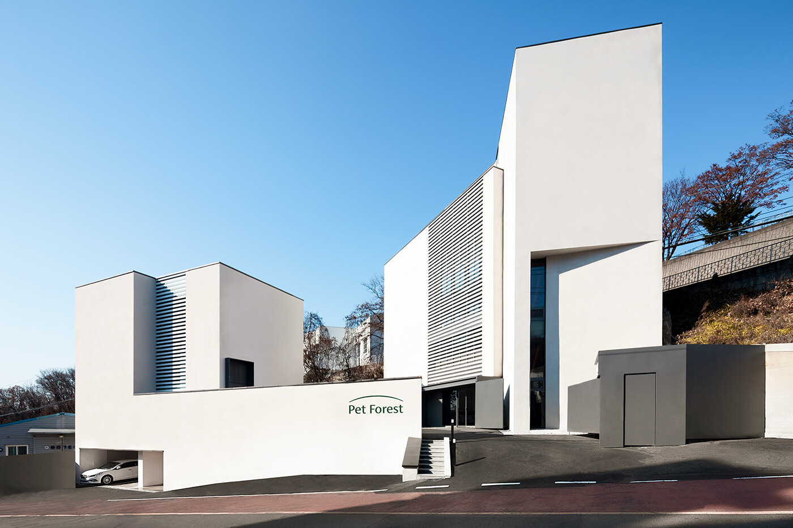
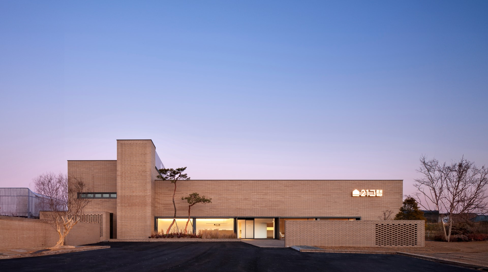
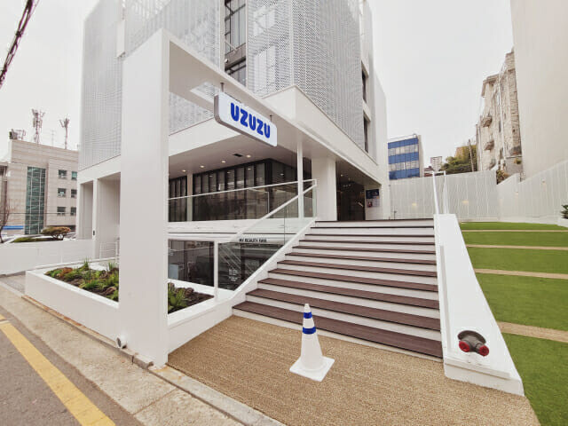
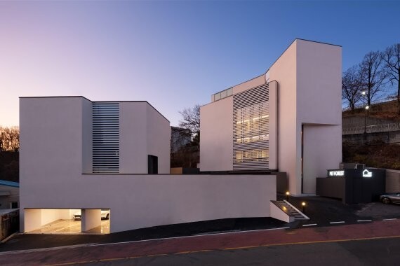

건축가 출신으로 반려동물 장례식장을 설계하다가, 높은 영업이익률을 알게 되었다. 중간에 플랫폼 사업, 반려동물 케어센터 등 사업 확장으로 위기를 겪기도 했다. 현재는 장례식장에만 집중하며 PE에 인수되어, 전국 15개 반려동물 장례식장을 운영하고 있다.
안녕하세요, 권신구입니다. 반려동물 장례식장 '21그램'을 운영하고 있습니다. 회사 이름 때문에 다른 곳과 자꾸 엮이는데, 전혀 무관한 회사입니다.
저는 건축가 출신입니다. 경희대 학부, 와세다 대학원을 나와 설계 사무실에서 일을 시작했어요. 그 당시만 해도 박봉에 밤새는 게 일상이었죠. 그러다 결혼을 하고 아이를 키우게 되면서, 직접 건축사무소를 차리게 되었습니다.
정말 좋은 시장인데 아무도 몰랐던 반려동물 장례식장
그러다 반려동물 장례식장 사장님을 고객으로 모시게 되었어요. 사람 장례식장은 문상객이 오니 깔끔하잖아요? 그런데 반려동물 장례식장은 엄청 지저분했어요. 그냥 시골 자기 건물에 화장로 갖다 놓은 게 다였죠.
그런데 현금 창출이 엄청나더라고요. 당시 전국에 장례식장이 12개밖에 없었는데, 매출도 높고 영업이익률이 50% 가까이 됐어요.
그래서 사장님들을 보면 외제차 끄는 건물주가 많았어요. 웃긴 건, 그런 부자분들이 마스크 쓰고 목장갑 끼고 장화 신고 직접 몸으로 뛰고 있었다는 거예요.

지저분한 장례식장도 돈을 잘 버는데, 깨끗해진다면 훨씬 잘 될 거 아니에요? 제가 리모델링한 장례식장은 정말 엄청나게 돈을 잘 벌었어요. 하지만 제가 받은 돈은 건축 설계비뿐이었죠. 그래서 저도 돈 안 되는 건축 설계가 아니라, 반려동물 장례식장을 직접 열어야겠다고 생각했습니다.
검증된 수익모델을 제시하자 투자자들이 바로 지갑을 열다
그래서 저도 반려동물 장례식장을 하고 싶었어요. 그런데 자본이 너무 많이 들어가니까 엄두를 못 냈죠. 그래서 먼저 '반려동물 장례식장 플랫폼'을 만들었어요. 반려견이 세상을 떠나면 플랫폼에서 검색해 장례식장들을 비교하고, 한 곳을 고르면 수수료를 받는 모델이었죠. 하지만 잘되지 않았어요. 광고비만 박았죠.
돈이 없어 먹고살아야 하니 강아지 유골함 같은 용품도 만들어 팔았어요. 당시 장례식장에는 원가 1만 원도 안 하는 싸구려 유골함만 있었거든요. 저희는 원가 10만 원 넘는 걸 25만 원에 팔자고 제안했죠. 반려동물을 잃은 분들은 이왕이면 더 좋은 유골함을 고르고 싶어할 거니까요. 하지만 잘되지 않았어요.
어차피 장례식장 사장님들은 줄 서고 장사가 잘되니 갑의 입장이었어요. 저는 공급자적 마인드에서 생각했고, 사장님들은 굳이 제 사정을 봐줄 필요가 없었던 거죠.
결국 돌고 돌아, '장례식장'이라는 검증된 모델이 아니면 돈 벌기 힘들다는 생각을 했어요. 이후 두 차례에 걸쳐 60억을 투자받습니다. 한투파, SBS, GS 등 굵직한 곳에서요. 물론 오프라인 사업이라 밸류가 그리 높지는 않았어요. 하지만 당시 저희가 아무것도 없는데도, 장례식장이라는 사업 모델을 투자자가 인정해 준 거예요.

밸류체인 확장이라는 헛발질
그렇게 저희는 반려동물 장례식장을 3개까지 늘려 직영으로 운영했어요. 그러던 2023년, 시장을 흔드는 변화가 일어납니다. 반려동물 장례식장이 '신고제'에서 '허가제'로 바뀐 거예요. 사실 당연한 거예요. 장례식장은 화장장이고 뭔가를 태우는 거잖아요. 그런데 아무도 이 시장에 관심이 없다 보니 알음알음 운영되고 있었던 거죠.
이후 두 가지 변화가 생겼어요. 우선 더는 장례식장을 늘릴 수 없게 됐어요. 화장장은 혐오시설로 분류되고, 지자체 허가를 받는 게 너무 힘들거든요. 그래서 기존 장례식장의 가치가 급등합니다. 그리고 이를 인수하려고 수백억 단위 대자본이 들어와요. 저희 같은 스타트업은 더 이상 장례식장을 늘릴 수 없게 된 거죠. 허가는 너무 느리고, 인수는 자금에서 밀리니까요.
이때 저희가 잘못 선택한 게, 장례식장에 집중하지 않고 다른 길을 찾은 거예요. 반려동물 케어센터, 강아지 놀이터, 사료 커머스 등으로 밸류체인을 확장했는데, 결과적으로 다 잘 안 됐어요.
개별로 따지면 나쁘지 않아서 금방 흑자전환할 것 같았지만, 결국 조직의 복잡성만 높아지더라고요. 잘되는 장례식장에 더 신경을 못 쓰고, 안되는 일에 시간을 쓰게 됐어요.

다시 잘 되는 모델에만 집중, 사모펀드에 인수
그래도 다행인 건 저희에게 3개의 장례식장이 있었다는 거예요. 지금 전국에 반려동물 장례식장이 70개가 넘거든요. 그래서 예전처럼 50% 영업이익이 나는 건 힘들어요. 그런데 저희 장례식장은 꾸준히 높은 매출에 영업이익을 내고 있었어요. 회사 전체는 힘들어도, 정말 잘되는 확실한 사업부가 있었던 거죠.
그리고 저희는 '기업'으로서 반려동물 장례식장을 운영하는 몇 안 되는 회사였어요. 다른 곳은 사장님들이 돈은 많이 벌어도 자영업자로 힘들게 운영했거든요. 저희는 모든 게 시스템화되어 있었어요. 그래서 회사가 굉장히 힘든 상황 속에서도 투자 유치에 매달렸고, 결과적으로 사모펀드로부터 총 800억 원이 들어오며 인수까지 마무리됐습니다.

지금은 사모펀드에서 온 공동대표님과 함께 회사를 운영하고 있어요. 좋은 사업 모델에 자금을 집중시키며 지점을 15개까지 늘린 상태입니다. 이미 국내 1위는 공고해졌고, 더 높은 매출·영업이익·시장점유율을 위해 뛰고 있어요. 이제 와서는 잘 풀린 것 같지만 눈 돌릴 때마다 엄청난 위기를 맞았습니다. 결국 좋은 사업은 엉뚱한 데 눈 돌리지 말고, 돈 되는 일에만 집중하는 것 같습니다.